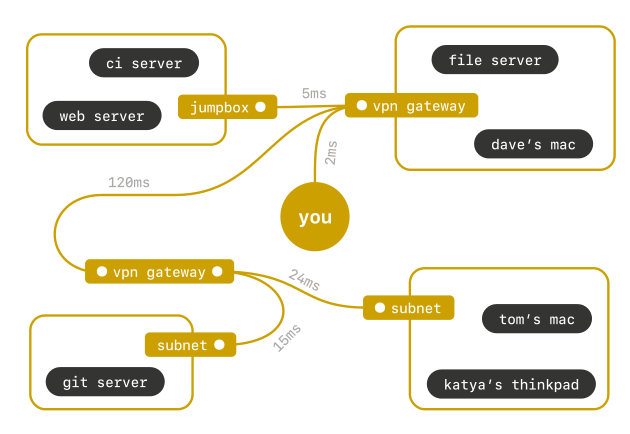
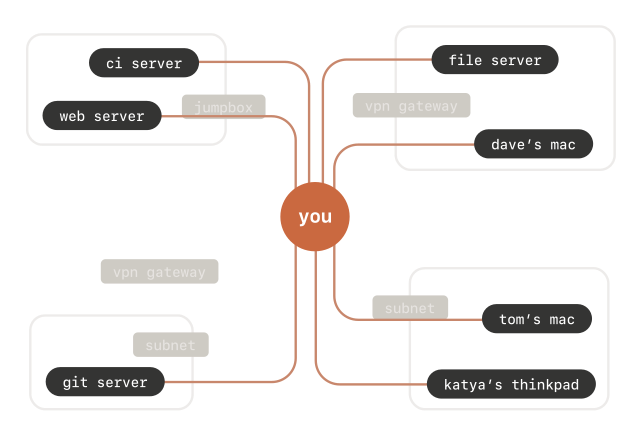
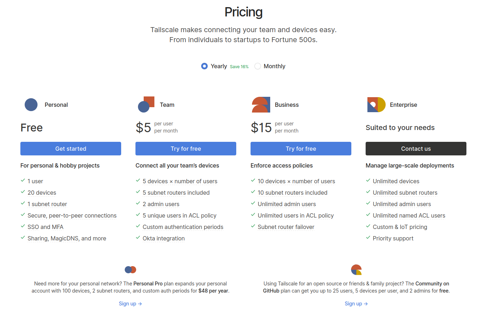

Synology NAS に Tailscale を設定する

前回からチマチマ作業して，ようやく中身の整理と Git Server の設定までできた。 以前まで使ってた簡易 NAS では無造作にバックアップを取ってたので，特に音楽ファイルと写真ファイルの整理で時間がかかってしまったよ。
写真ファイルは8K個くらいあったんだけど，この規模だとダブりとか確認しようがないし，途中で面倒くさくなって全部 Synology Photos サービスに突っ込んでしまった。
一方で音楽ファイルは2.3K個ほど。 これは普通だよね。 アルバム換算で160枚分程度だし。
で，まぁ，そんなこんなで落ち着いて運用できるようになったので，いよいよ Tailscale に手を出すことにした。
Tailscale とは
Tailscale とは VPN (Virtual Private Network) 実装のひとつである。
なお，この記事では VPN を物理的な回線・ネットワークの上に構築された「
- カプセル化とトンネリング
- 経路の暗号化
- 認証とアクセス制御
旧来の VPN は，拠点間 VPN であれリモートアクセスであれ「バイパス型」であれ，出口ノードがネットワークそのものになっているのが特徴である。

これに対して Tailscale では機器間を直接つないでいるのが特徴と言える1。

Tailscale の実装は WireGuard 技術を用いており，サービスとしての tailscale.com は接続機器のコンフィグレーションを管理するのみで通信そのものには関与しない。 正しく E2E 暗号化通信というわけだ（笑）
2021-10-31 現在，個人ユーザは20接続までの制限付きで無料で利用できる。 また年48USDほど払えば100接続まではいけるらしい。 企業またはチームとして利用する場合はユーザごとに接続先を制御する必要があるだろうし，そのための料金プランも用意されているようだ。

旧来の VPN はいわゆる ZTA (Zero Trust Architecture) とは相性が悪いと言われているが Tailscale を使って機器単位でアクセス制御できるのであれば ZTA にも組み込みやすいだろう。 個人的にはスマート・ホームなど IoT 機器こそ Tailscale に対応してもらいたいよなぁ。
ちなみに Tailscale の基本ロジックは Go で書かれている。 まぁ WireGuard のユーザランド実装が Go だしね。
Synology NAS に Tailscale をインストールする
今回，私が導入した Synology NAS には Tailscale パッケージが用意されおり，パッケージセンターからインストールできる。
{kind=link}
これは現在 GitHub で Tailscale 公式のリポジトリとして運営されているようだ。
さっそくインストールしてパッケージを開くと
{kind=link}
てな感じにログインを促す画面が開く。
早速 [Log In] ボタンを押すとブラウザの tailscale.com のサインイン・ページが開く。
{kind=link}
おっ GitHub アカウントが使えるのか。 よしよし。
このページで認証が完了したら再び Tailscale パッケージを開いて
{kind=link}
てな感じに表示されれば接続完了である。 うん，簡単簡単。
なお IP アドレスの 100.64.0.0/10 領域は Carrier-Grade NAT の “Shared Address Space” (RFC 6598) として確保されているものらしい。
こんなん使って大丈夫か？ と思うが，まぁユーザ側が気にすることではあるまい。
tailscale-synology のアップデート
Synology NAS から見て tailscale-synology はサードパーティ製品なので自動アップデートに対応してないらしい。 故に GitHub の tailscale/tailscale-synology リポジトリのリリース情報に注意して手動でアップデートを行う必要がある。
インストール後のパッケージセンターの表示を見ると
{kind=link}
となっている。 2021-10-31 時点の最新は v1.16.2 なのでちょっと古いようだ。
“List of spksrc architecture per Synology model” によると DS220j は “rtd1296 (armv8)” だそうなので tailscale-armv8-1.16.2-2013-dsm7.spk ファイルをダウンロードして適用すればいいのかな。
やってみよう。
上の画面の右上にある [手動インストール] ボタンを押して「パッケージのアップロード」を開く。
{kind=link}
ここで先ほどダウンロードしたファイルを指定して [次へ] ボタンを押すと
{kind=link}
と警告が出るが，ビビりつつ [同意する] ボタンを押す。
すると「設定の確認」が出るので
{kind=link}
[完了] ボタンを押す。
アップデートが完了すると，先ほどのパッケージセンターの表示が
{kind=link}
とバージョンが上がっていることがわかる。
よーし，うむうむ，よーし。
Android 端末に Tailscale をインストールする
次は手持ちの Android 機に Tailscale をインストールして，外から前節で設定した Synology NAS にアクセスしてみる。
Andorid 版 Tailscale は Google Play Store からインストールできる。
{kind=link}
いや，3歳は無理やろ（笑）
インストールを完了しアプリを開くとサインイン画面になる。
{kind=link}
「あれ？ Google だけ？」と一瞬思ったが，焦らず [Sign in with Other] ボタンを押すと NAS のときと同じ tailscale.com のサインイン・ページが開く。
{kind=link}
Google 以外ならこちらのページで認証を行うとよい。 認証が完了すると
{kind=link}
などと表示される。 自機以外に先程の NAS も表示されているのが分かるだろうか。 なお Tailscale で接続済みの機器は，ブラウザでも機器一覧ページで確認することができる。
この状態で FE File Explorer Pro を使ってアプリに表示されている IP アドレスに対して SMB 接続を確認できた。 めでたし！
ちなみに私は「バイパス型 VPN」として F-Secure 社の FREEDOME VPN を購入して使っているが，これを起動した状態で Tailscale を有効にしても問題なく相手機器に接続できた。 よかった，よかった。